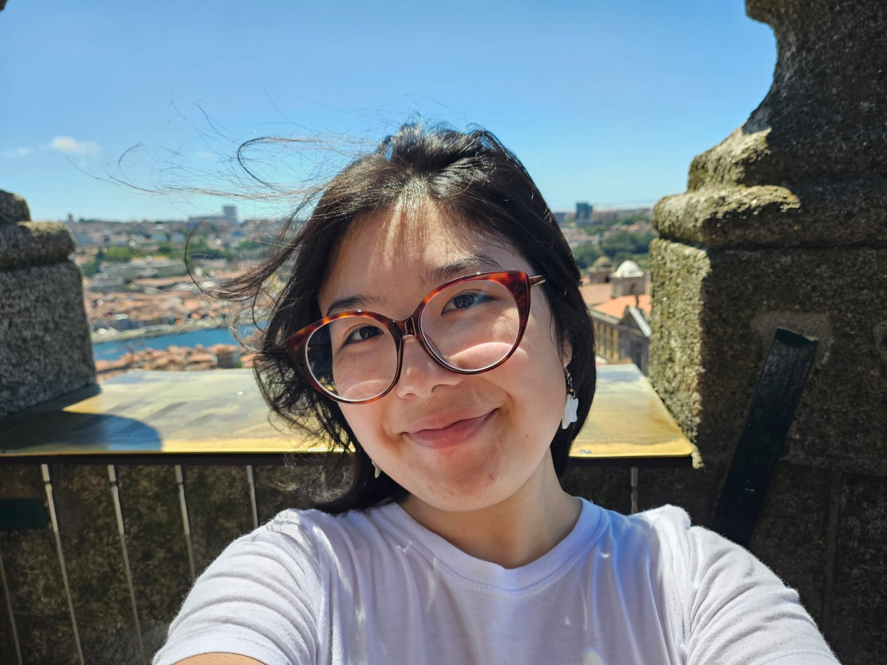

Fernanda Yumi Assonuma
Aluna de Bacharelado em Ciência da Computação no Instituto de Matemática e Estatística da Universidade de São Paulo, curso cujo ingresso ocorreu em 2025
Sobre mim
Formação técnica
Pela Escola Técnica de São Paulo, instituição do Centro Paula Souza, concluí em 2023, o Ensino Médio Integrado ao Técnico no curso de Desenvolvimento de Sistemas
Ensino Superior
Atualmente aluna do IME-USP no Bacharelado em Ciência da Computação, pretendo seguir a trilha de Teoria da Computação.
Outras Atividades
Participo do grupo iCEM (Iniciação Cienífica para Estudantes Medalhistas) do IME-USP e atualmente sou monitora do Curso de Inverno do grupo de extensão CodificADAs, que visa a estimular a participação de mulheres nas áreas de exatas e computação.
Projetos em Andamento
Iniciação Científica (IME-USP)
"Estimação de distribuição quase-estacionária via algoritmo EM em sistemas estocásticos de neurônios interagentes". Visa simular computacionalmente o comportamento de um sistema de neurônios em passos discretos usando cadeias de Markov
NETMOD Data Challenge
Desafio para trabalho com limpeza e análise de dados da cidade de Niterói.
Formas de contato
Aqui estão algumas formas de entrar em contato ou de acompanhar futuros trabalhos e projetos.